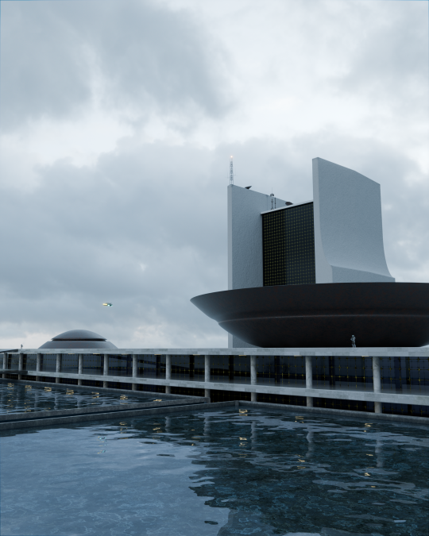
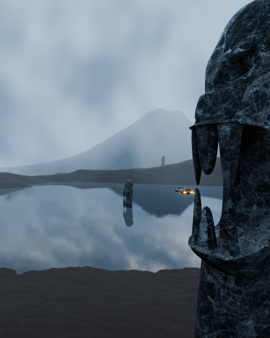
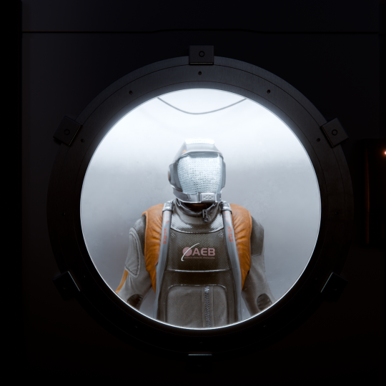
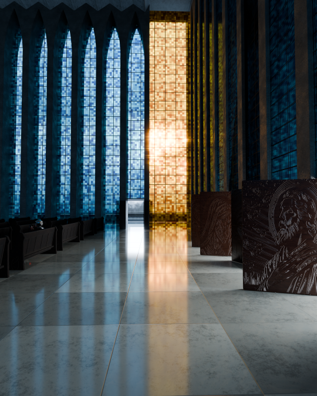
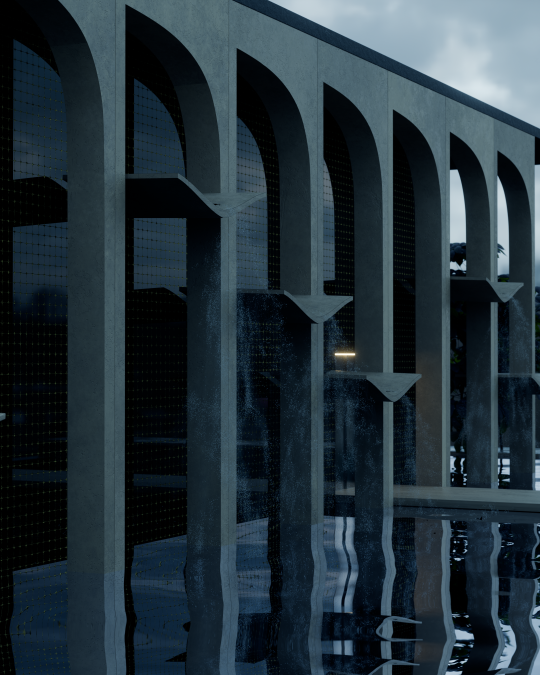
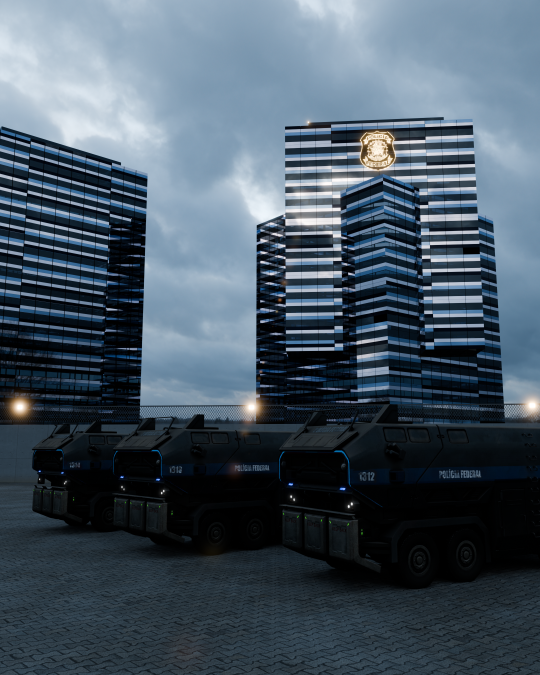
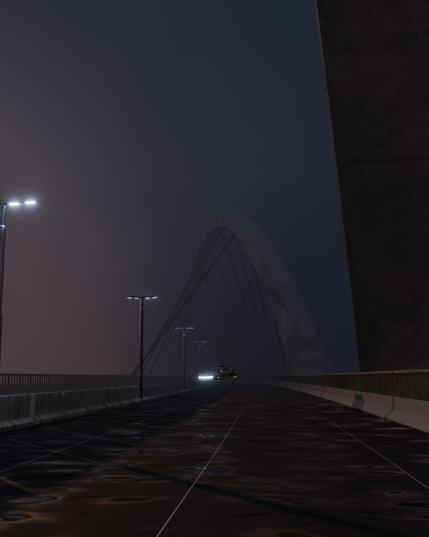
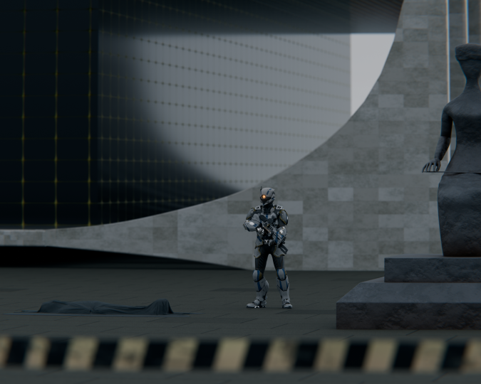
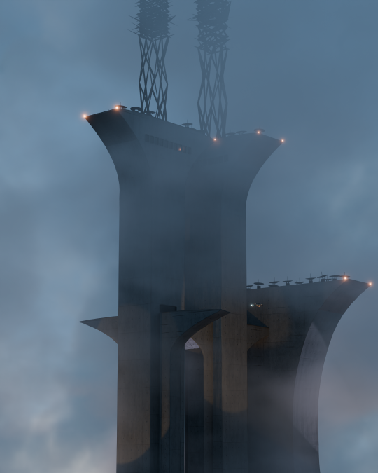

Gallery
Visual Fragments
All images created in Blender 3D and Krita. No AI.

Congresso Nacional / National Congress

Caixa D'Água de Ceilândia / Ceilândia Water Tower

Carrancas / Figureheads

Astronauta / Astronaut

Catedral Dom Bosco / Dom Bosco Cathedral

Itamaraty

Hangar

Polícia Federal / Federal Police

Ponte JK / JK Bridge

Supremo Tribunal Federal / Supreme Court

Torre de TV digital / Digital TV tower